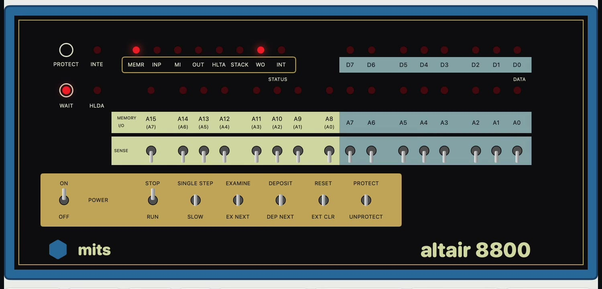
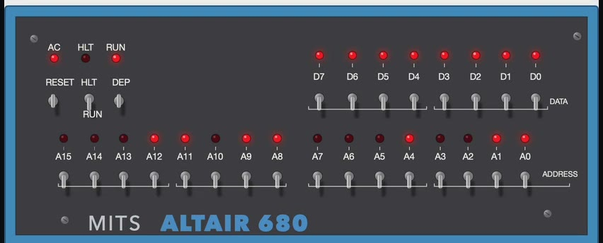
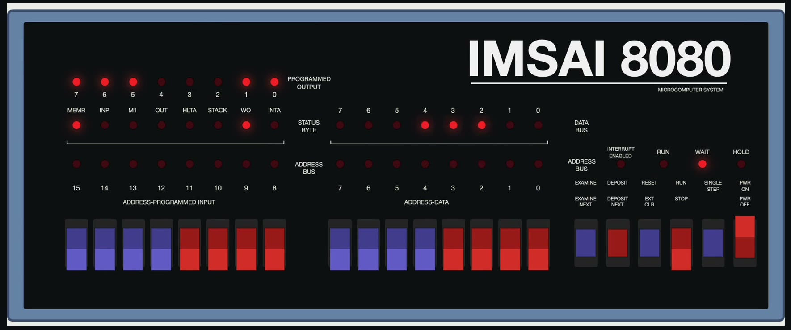
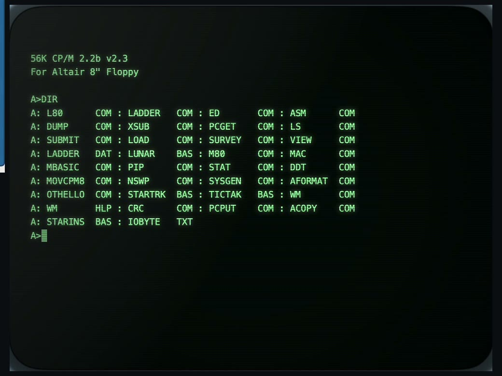

Intro video, about 23 seconds, with sound and English narration. The screens are recordings of the real app, whose menus are in Japanese; slow parts, such as loading BASIC, are fast-forwarded (marked ×3, ×8). The narration is AI-generated (Gemini TTS). 紹介動画(約 23 秒、音声と日本語のナレーションあり)。画面は実際のアプリの録画で、BASIC の読み込みなど待ち時間の長いところは早送りしています(×3、×8 の表示)。ナレーションは AI 音声(Gemini TTS)です。
Three front panels in one app.3 台のフロントパネルを、1 つのアプリで。
Switch machines from the top-left of the window. Each machine has its own power, so the other one keeps running and keeps its terminal.ウィンドウ左上で機種を切り替えます。電源は機種ごとに独立していて、切り替えても、もう一方の電源や端末の画面はそのまま残ります。

ALTAIR 8800
Intel 8080 · 2 MHz
- Every 8080 instruction, with clock counts. EXAMINE, DEPOSIT, RUN, SINGLE STEP and RESET on the panel.
- 8080 の全命令をクロック数つきで実装。パネルで EXAMINE、DEPOSIT、RUN、SINGLE STEP、RESET。
- 88-DCDD floppy controller and drives A–D. CP/M 2.2b, CP/M 3, and Zork boot from disk.
- 88-DCDD フロッピーコントローラとドライブ A〜D。CP/M 2.2b、CP/M 3、Zork がディスクから起動。
- Altair BASIC 8K in ROM at E000h.
- Altair BASIC 8K を ROM として E000h に取り付けて実行。

ALTAIR 680b
Motorola MC6800 · 500 kHz
- PROM monitor (
M,J,L), and Altair 680 BASIC loaded from paper-tape records. - PROM モニタ(
M、J、L)と、紙テープ版の Altair 680 BASIC の読み込み。 - 68-UIO board and Pertec FD3712 floppy controller. FLEX 3.0 and CP/68 boot from disk; FLEX BASIC can SAVE and LOAD.
- 68-UIO ボードと Pertec FD3712 フロッピーコントローラ。FLEX 3.0 と CP/68 がディスクから起動し、FLEX BASIC で SAVE と LOAD ができます。
- The power switch is on the back of the real machine, so it is a button beside the panel.
- 実機では電源スイッチが背面にあるので、パネルの横のボタンで入れます。

IMSAI 8080
Intel 8080 · S-100
- CP-A front panel with paddle switches and the programmed-output LEDs.
- パドルスイッチとプログラム出力 LED のある CP-A フロントパネル。
- SIO-2 serial board and the FIF floppy interface (its host-visible behaviour, error codes included).
- SIO-2 シリアルボードと FIF フロッピーインタフェース(ホストから見える動作をエラーコードまで再現)。
- IMSAI CP/M 1.31 boots. CP/M 1.33, CP/M 2.2, Fig-Forth, IMDOS 2.02 and 2.05 boot from the ほかの OS で起動 (boot another OS) menu.
- IMSAI CP/M 1.31 が起動。「ほかの OS で起動」から CP/M 1.33、CP/M 2.2、Fig-Forth、IMDOS 2.02、2.05 も起動します。
Disks, a terminal, and tested CPUs.ディスク、端末、テスト済みの CPU。
Read, write, format読む、書く、フォーマットする
Disks are copied to a working copy, so writes never touch the original. Blank unformatted disks can be formatted with the guest OS's own tool: AFORMAT, NEWDISK or INIT.ディスクは作業用コピーに書き込むので、元のファイルは変わりません。未フォーマットの空ディスクを作り、ゲスト OS のツール(AFORMAT、NEWDISK、INIT)でフォーマットできます。
80 × 24 terminal80 × 24 の端末
Understands ANSI (VT100) and ADM-3A cursor control, enough for WordMaster on CP/M. Serial speed can be limited to 9600, 1200, 300 or 110 baud.ANSI(VT100 系)と ADM-3A のカーソル制御を解釈し、CP/M の WordMaster が動きます。シリアルの速度は 9600、1200、300、110 ボーに制限できます。
8080 exerciser: 25 / 25 PASS8080EXM: 25 項目すべて PASS
TST8080, 8080PRE, CPUTEST and 8080EXM all pass. 8080EXM runs 23.8 billion clocks, about 3.3 hours on a real 2 MHz 8080.TST8080、8080PRE、CPUTEST、8080EXM に合格。8080EXM は 238 億クロックで、2MHz の実機なら約 3.3 時間分です。
6800 functional test6800 の機能テスト
No standard 6800 CPU test was found, so the project generates one: 2,660 cases covering 196 opcodes and every addressing mode, checked against a separate Python reference model.定番の 6800 CPU テストが見つからなかったので、自作しました。196 オペコードと全アドレッシングモードの 2,660 ケースを、別に書いた Python の参照モデルと照合します。
Build a CP/M diskCP/M ディスクをつくる
FORTRAN-80 and COBOL-80 are distributed as loose files. The app packs them into one CP/M 2.2 disk image you can mount on drive B.FORTRAN-80 や COBOL-80 は単体のファイルで配られています。アプリがそれらを CP/M 2.2 のディスクイメージ 1 枚にまとめ、ドライブ B に入れて使えます。
Real speed or flat out実機の速度か、最速か
Run at the real clock rate, catching up after short stalls, or as fast as the Mac can go.実時間に合わせて実行し、遅れた分は取り戻すか、Mac の最速で走らせるかを選べます。

CP/M 2.2b
Altair 8800 · 8" floppyAltair 8800 · 8 インチフロッピー
DIR,PIPcopies to disk, andMBASIC(BASIC-80) were checked in the app.DIR、PIPでのディスクへのコピー、MBASIC(BASIC-80)をアプリで確かめています。- Drives can be mounted and ejected by clicking the drive door.
- ドライブのドアをクリックすると、ディスクを入れたり出したりできます。
Build it from source.ソースからビルドする。
There is no prebuilt download. You need macOS 14 or later and Xcode 16 or later (Swift 6 toolchain).ビルド済みの配布はありません。macOS 14 以降と Xcode 16 以降(Swift 6 のツールチェーン)が必要です。
# clone git clone https://github.com/Masakai/AltairSim.git && cd AltairSim # run the app swift run AltairSim # or build build/AltairSim.app (ad hoc signed, not notarized) Tools/make_app.sh --install
- The app's menus and buttons are in Japanese. Open Settings (⌘,) and import the ROMs and disk images (see below).AltairSim ▸ 設定…(⌘,)を開き、ROM とディスクイメージを取り込みます(下の「ROM とディスク」)。
- On the Altair 8800, press CP/M 2.2. The machine boots from drive A and
A>appears in the terminal.Altair 8800 で CP/M 2.2 を押すと、ドライブ A から起動して、端末にA>が出ます。 - On the Altair 680b, turn the power on. The PROM monitor prints its
.prompt. The button BASIC を読み込んで起動 (load and start BASIC) runs BASIC.Altair 680b は電源を入れると PROM モニタの.が出ます。「BASIC を読み込んで起動」で BASIC が動きます。 - On the IMSAI 8080, press CP/M 1.31, or key a program in with the paddles and RUN it.IMSAI 8080 は CP/M 1.31 を押すか、パドルでプログラムを打ち込んで RUN します。
swift testruns the tests. Tests that need ROMs or disks you have not imported are skipped.swift testでテストを実行します。取り込んでいない ROM やディスクが必要なテストは、自動でスキップします。
Bring your own ROMs and disks.ROM もディスクも、自分で取り込む。
Because of their distributors' licenses, ROMs, disk images and 8080 test programs are not in this repository or the app. Check each distributor's terms, download the files, and import them in the Settings window: drag files or folders onto the list, and the app identifies them by name. IMSAI .tgz archives can be imported as they are.配布元のライセンスの都合で、ROM、ディスクイメージ、8080 テストプログラムは、リポジトリにもアプリにも含めていません。配布元の条件を確かめて入手し、設定画面へ取り込みます。ファイルやフォルダを一覧へドラッグすると、名前で判別します。IMSAI の .tgz は展開せずにそのまま取り込めます。
| MACHINE機種 | FILESファイル | WHERE TO LOOK探す場所 |
|---|---|---|
| Altair 8800 | Altair BASIC 8K ROMAltair BASIC 8K ROM | altairclone.com/downloads/roms/8K BASIC/ |
| Altair 8800 | Disk boot loader (88dskrom.bin)ディスクブートローダ(88dskrom.bin) | github.com/tommojphillips/Altair8800 |
| Altair 8800 | CP/M 2.2b, CP/M 3, Zork, BASIC Compiler, BDS C, FORTRAN-80, COBOL-80CP/M 2.2b、CP/M 3、Zork、BASIC コンパイラ、BDS C、FORTRAN-80、COBOL-80 | altairclone.com/downloads/cpm/ |
| 8080 | CPU tests (TST8080, 8080PRE, CPUTEST, 8080EXM)CPU テスト(TST8080、8080PRE、CPUTEST、8080EXM) | github.com/superzazu/8080 |
| Altair 680b | PROM monitors, BASIC, boot PROM, FLEX 3.0, CP/68PROM モニタ、BASIC、起動 PROM、FLEX 3.0、CP/68 | deramp.com/downloads/altair/software/altair_680/ |
| IMSAI 8080 | CP/M 1.31, IMDOS FORMAT.COMCP/M 1.31、IMDOS の FORMAT.COM | deramp.com (IMSAI software) |
| IMSAI 8080 | CP/M 1.33, CP/M 2.2, Fig-Forth, IMDOS 2.02 / 2.05CP/M 1.33、CP/M 2.2、Fig-Forth、IMDOS 2.02 / 2.05 | z80pack mirrorz80pack のミラー |
The exact URL for each file is shown in the Settings window. The full list is in the README.ファイルごとの正確な取得元は、設定画面の一覧にあります。全体の一覧は README にあります。
What is not done yetまだできていないこと
| Timingタイミング | The floppy controllers do not model rotation in time. The 88-DCDD advances one sector per sector-register read; the FD3712 and FIF approximate each command's busy time.フロッピーの回転は時間で再現していません。88-DCDD はセクタレジスタを読むたびに 1 セクタ進み、FD3712 と FIF はコマンドごとの所要時間で近似しています。 |
| IMSAI | The INTA and HOLD LEDs are always off. FIF error codes 91, 92 and 94–97 are not reproduced. UCSD p-System IV starts but prints nothing.INTA と HOLD の LED は常に消灯です。FIF のエラーコード 91、92、94〜97 は再現していません。UCSD p-System IV は起動しても出力がありません。 |
| 6800 | The CPU and its reference model were written by the same person, so a shared misunderstanding would not be caught. Not compared against real hardware or another emulator.CPU と参照モデルは同じ人が書いたので、同じ思い違いは見つけられません。実機や別のエミュレータとは照合していません。 |
| Signing署名 | The app is ad hoc signed for your own Mac. To give it to others, sign it with a Developer ID and notarize it.アプリはアドホック署名で、自分の Mac で使う前提です。人に配る場合は、Developer ID での署名と公証が必要です。 |